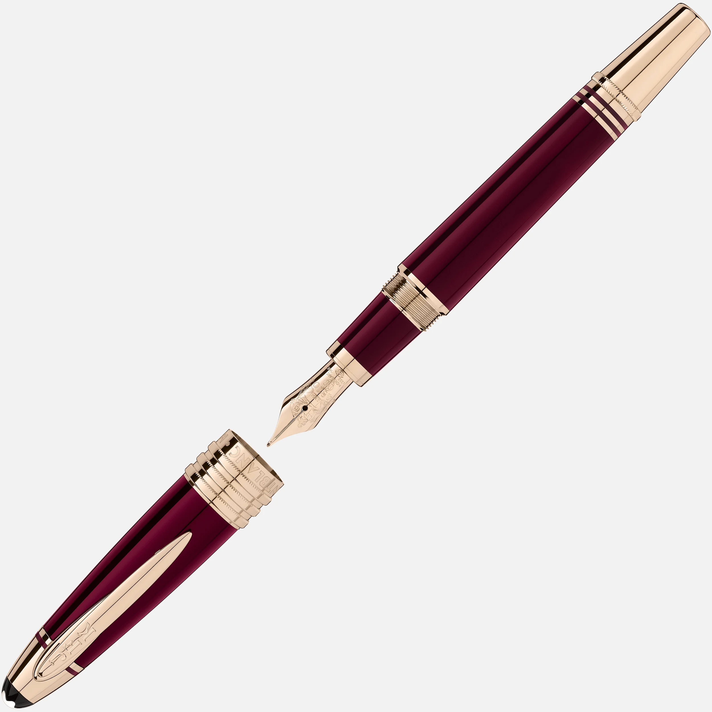
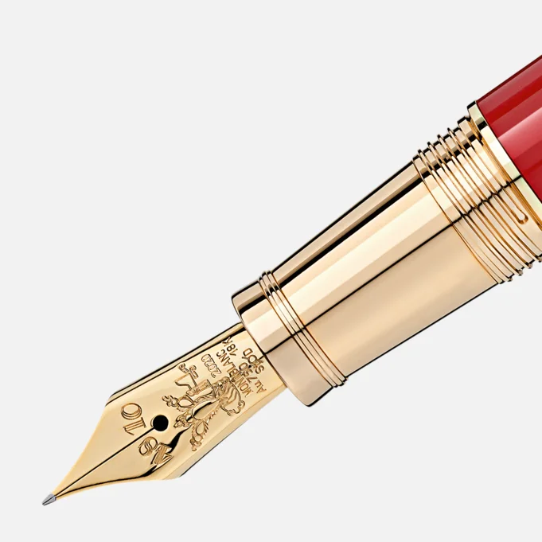
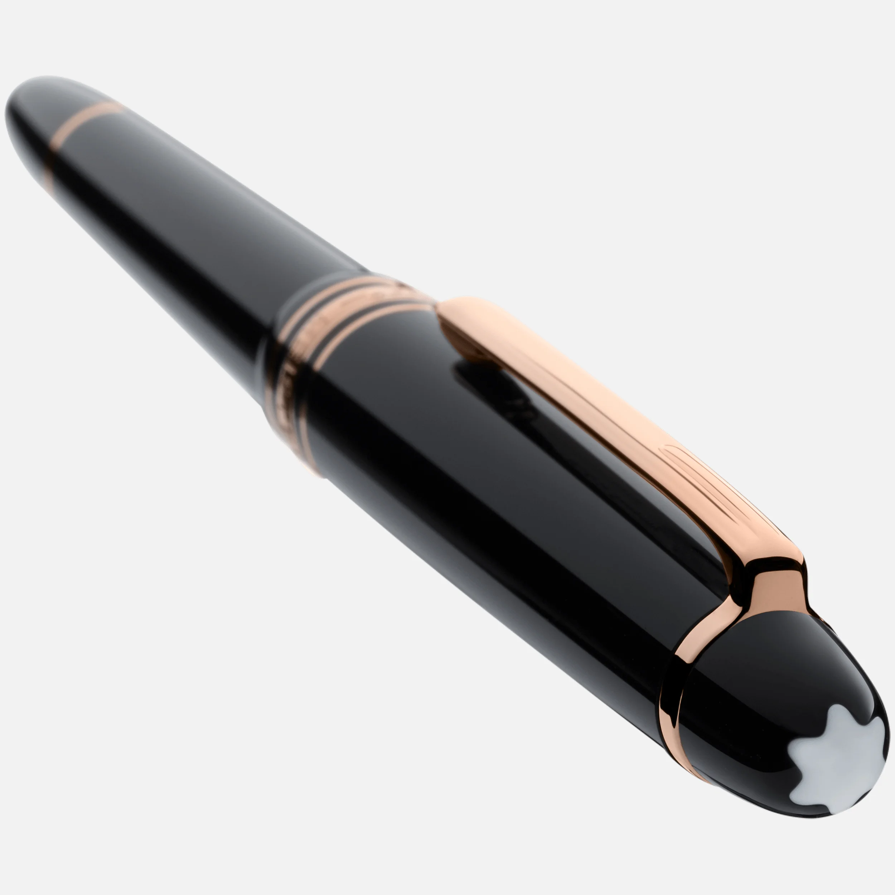

Fountains
Italian Handcrafted Fountain Pens



Our mission is to create beautiful, one-of-a-kind fountain pens for everyday use. We pay close attention to each detail and we source only the highest quality materials. Each fountain pen is uniquely handcrafted and no two Fountains pens are alike. Birthdays, anniversaries, retirements, and more have been made all the more special with the gift of our beautiful pens.